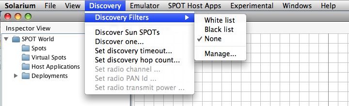
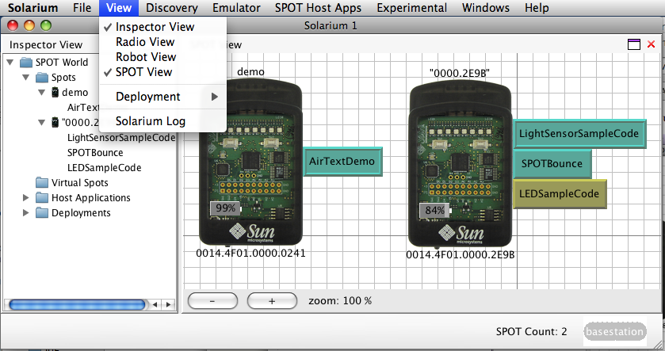
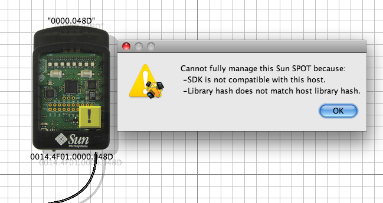
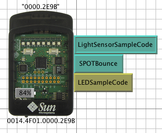

Discovering and Displaying SPOTs
Solarium can detect and display SPOTs that are connected to the desktop via
USB either directly or through one or more USB hubs. It can also detect nearby
SPOTs via wireless communication.
Turning on the OTA Command Server
|
The "over-the-air" (OTA) command server is a piece of
software that runs on the SPOTs and listens for management commands
sent wirelessly from a host application such as Solarium.
SPOTs must have their OTA command server turned on to be
discoverable via wireless communication. The OTA command server is
turned on by default. If it is turned off for some reason (as indicated
by ant system-properties showing spot.ota.enable:
false), it can be turned on again by connecting the SPOT to the
desktop via USB and using any one of the following options:
- Issuing the ant enableota command in a terminal window.
- Using the "Enable OTA" button in SPOT Manager
|
Controlling SPOT Discovery
|
The Discovery pull-down menu in the main
Solarium menu bar allows you to control the discovery process that
Solarium uses to find the local SPOTs. The choices are:

- Discovery Filters
This command allows the discovered SPOTs to be filtered according
to a white (include) or black (exclude) list. It also allows one to
edit which SPOT addresses go on the white or black lists.
- Discover Sun SPOTs
This choice sends a broadcast discovery message, asking Sun SPOTs
to identify themselves. If the broadcast message reaches a Sun SPOT
running the OTA command that SPOT will respond with basic
information, e.g.its IEEE address, the version of its SDK
etc.. This command also causes Solarium to scan the USB
ports on the host and discover any connected SPOTs (even if they
have their OTA command server turned off). Discovered SPOTs are
displayed in Solarium.
- Discover one...
This choice allows you to send a unicast discovery message to a
specific IEEE address. Solarium will attempt to find that
particular SPOT. The broadcast hop count setting described below is
ignored when the discovery message is sent as a unicast.
- Set discovery time out...
This choice specifies how long Solarium will wait for an answer to
its broadcast discovery message. It defaults to three seconds.
- Set discovery hop count...
This choice specifies how many radio hops a broadcast discovery
message may traverse before it is no longer forwarded from SPOT to
SPOT. When using a shared basestation, this setting must be at
least two, since the communication between the host application and
the shared basestation counts as one hop. Therefore, at least two
hops are required to reach any actual SPOTs. If you want Solarium
to reach SPOTs beyond the direct radio range of the basestation,
the hop count should be set to three or more.
- Set radio channel...
Allows you to specify the radio channel used for discovery.
Defaults to 26.
Note: It is not possible to change the radio channel when
using a shared basestation.
- Set radio PAN Id...
Allows you to specify the PAN ID used by Solarium during discovery.
Defaults to 3.
Note: It is not possible to change the PAN ID when using a
shared basestation.
- Set radio transmit power...
Allows you to specify the transmit power used by Solarium during
discovery. Defaults to full power (0).
Note: It is not possible to change the transmit power when
using a shared basestation.
|
Controlling which SPOTs are
displayed
|
By default, Solarium displays all of the SPOTs it
discovers. In an environment with lots of SPOTs, a user might want to
ignore some of them to avoid cluttering the Solarium display
unnecessarily. The .solarium.properties file in the user's
home directory allows one to specify either a "blacklist" or a
"whitelist" of SPOTs. If a whitelist is specified, only the SPOTs on
that list are displayed, all others are ignored. If a blacklist is
specified, SPOTs on that list are ignored and all others are displayed.
To edit these lists, simply select the “manage...” item from the
“Discovery > Discovery Filters” menu. If you wish to edit these
lists without using the tool, you can (carefully) change your
.solarium.properties file. For example, to ignore all SPOTs except
those with the IEEE address of 0014.4F01.0000.020B or
0014.4F01.0000.048D insert the following line in your
.solarium.properties file:
<entry
key="spots.whitelist">0014.4F01.0000.020B,0014.4F01.0000.048D</entry>
|
Controlling how SPOTs are displayed
|
SPOTs can be displayed in several different ways by
Solarium. By default Solarium starts up displaying a tree-like
Inspector View, shown here to the left, and a 2-dimensional
SPOT View, shown here against the quadrille background to the
right. The views exposed are controlled through the View
pull-down menu on the menu bar. Both these views also show the
applications running on each SPOT.

After Solarium discovers the SPOTs, it will display all of them
along with the running applications currently running on those devices.
The Deployment View, Radio View and Robot View
will be described below.
Note: Multiple views can be combined (tiled) in a single
window. Just grab and drag the view's title bar, e.g. where it says
Inspector View. Views can be dragged into an existing window, or
dragged off onto the screen to make a new window. Thanks to Benjamin
Sigg, the creator of DockingFrames for his open source
Java Swing docking framework.
|
Interpreting Visual Cues
|
Solarium uses a number of visual cues to indicate
status information about the SPOTs:
- USB-connected SPOTs are drawn with a tail to indicate a
USB cable.
- A yellow warning rectangle on a SPOT indicates that Solarium
cannot fully manage that SPOT. Clicking on the yellow sign will
bring up a panel listing all of the reasons, e.g., that SPOT
may have a different owner or may have a version of the SDK that's
different from the version under which Solarium is running.
The figure below shows a USB-connected SPOT that cannot be fully
managed for the reasons shown.

- An application running in the master isolate is drawn
as greenish-bllue rectangle with a raised bezel while an
application running in child isolate is drawn as
a greenish-bllue rectangle with a plain bezel. An application that
is currently paused is drawn as an muted yellow colored rectangle.
Only applications running in a child isolate can be paused.
In the figure below, the LightSensor application is running
in the master isolate, the SPOTBounce application is running
in a child isolate and the LEDSampleCode application is
paused.

- Remaining battery power is shown in the small gray rectangle
drawn in the bottom, left of the SPOT. In this case the SPOT has
84% of its battery capacity remaining.
|